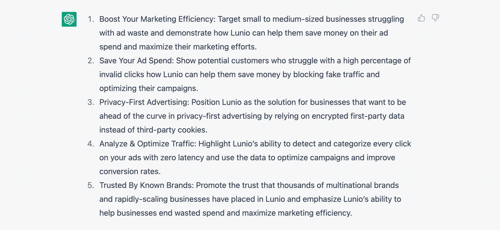

Насколько эффективен ChatGPT для PPC?
Если коротко, то очень
Существует множество различных вариантов использования. Что может повысить эффективность создания вашей кампании на порядок при правильном использовании. То, что раньше требовало двух дней напряженной работы, теперь можно сделать за 30 минут.
В этой статье мы расскажем о семи шагах, которые вы можете автоматизировать при использовании Open AI ChatGPT для PPC, охватывая все: от исследования ключевых слов Google Ads до видео TikTok.
Если вы выполните все шаги, описанные ниже, у вас будет все необходимое для запуска рекламной кампании в платном поиске и социальных сетях. Это простая структура для максимально быстрого запуска вашей PPC-активности с помощью искусственного интеллекта.
Однако результаты обработки в ChatGPT не идеальны. Они, вероятно, не будут полностью резонировать с тоном голоса вашего бренда. Но это можно решить небольшой доработкой. То, что дают вам результаты, — это основа, которая уже на 80% пройдена.
Готовы создать свою следующую кампанию PPC в рекордно короткие сроки?
ChatGPT для PPC: 10 вариантов использования
Каждый вариант использования более подробно рассматривается в 7-шаговой схеме ниже (с примерами). Вы можете пройти весь процесс от начала до конца. Или же воспользуйтесь приведенными ниже ссылками, чтобы узнать больше о вариантах использования, наиболее соответствующих вашим потребностям.
- Создайте 5 идей платных рекламных кампаний для своего бизнеса
- Создайте 15 релевантных ключевых слов для вашего бизнеса
- Создайте 5 идей идеальных целевых клиентов для кампании PPC
- Сформируйте демографические данные, модели поведения и интересы на основе этих 5 целей рекламы
- Создайте рекламную кампанию PPC для своего бизнеса
- Придумайте заголовки и описания объявлений PPC для своей кампании
- Создайте целевую интернет-страницу продаж для вашей кампании PPC
- Создайте идеи для рекламы в Facebook и Instagram для вашего бизнеса
- Создайте сценарии видео и рекламу для использования в TikTok и YouTube Shorts
- Создайте сценарий 60-секундной рекламы в видео на YouTube
Внимание! Всегда проверяйте и редактируйте выходные данные ChatGPT
Это указано выше в статье. Но стоит повторить.
Реальная опасность заключается в использовании ChatGPT с убеждением «установил и забыл». Вы можете использовать Zapier, чтобы подключить его к множеству других маркетинговых платформ и позволить всем работать полностью автоматически с минимальным контролем со стороны человека. Но это подвергает ваш бренд значительному риску по нескольким причинам:
- Фактические ошибки — ChatGPT иногда ошибается.
- Проблемы с тоном голоса — выходные данные могут не полностью отражать тон вашего веб-сайта.
- Избыточность — ненужное повторение определенных слов и фраз.
- Соответствие и законность — копия рекламы ChatGPT может не соответствовать отраслевым стандартам.
За исключением соблюдения требований и юридических вопросов, есть несколько обходных путей, которые вы можете использовать для решения трех других распространенных проблем с выходными данными ChatGPT:
- Вы можете повысить фактическую точность выходных данных, скопировав и вставив соответствующие данные под подсказкой, начав с модификатора «На основе приведенных ниже данных…». Вы также можете установить расширение WebChatGPT для Chrome, чтобы добавлять релевантные веб-результаты в свои подсказки для получения более точных и актуальных ответов.
- Чтобы ChatGPT соответствовал тону голоса вашего бренда, скопируйте и вставьте один из ваших самых эффективных постов в блоге вместе с подсказкой: «Извлеките тон голоса, который автор использовал для создания статьи ниже». Сохраните вывод, а затем добавьте его в качестве модификатора к будущим запросам, например. «Используйте позитивный и рекламный тон голоса»
- Чтобы свести к минимуму избыточность, просто добавьте «Избегать повторения» к соответствующим подсказкам.
На недавнем вебинаре мы поговорили с главой отдела платных медиа в Clickoo Гаретом Уэстхедом, и он указал важную причину для редактирования всех ваших выходных данных:
Если все используют ChatGPT, существует реальный риск того, что ваша рекламная копия будет очень похожа на рекламу ваших конкурентов. Все будут выглядеть как все, а ваше уникальное ценностное предложение заглушится шумом. Человеческое творчество по-прежнему имеет очень большое значение, и разумно поддерживать человеческое прикосновение.

Гарет Уэстхед
Руководитель отдела платных медиа в Clickoo
Отбросив эти важные предостережения, давайте углубимся в конкретные практические приложения при использовании ChatGPT для PPC.
Мы будем использовать Lunio в приведенных ниже примерах в иллюстративных целях. Но одни и те же шаги будут работать для всех предприятий, если вы измените подсказки соответствующим образом.
Создайте новый документ Google и используйте его для записи всех выходных данных ChatGPT, которые вы создаете. Затем они могут быть совместно просмотрены и отредактированы вами и вашей командой цифрового маркетинга. Затем это может стать живым документом, который действует как единая точка отсчета для всех соответствующих копий ресурсов, связанных с вашей кампанией.
Совет: чтобы получать все последние полезные подсказки ChatGPT, добавляйте FlowGPT в закладки.
Идеи кампании PPC
Ваша первоначальная идея кампании — это основа, на которой строится все остальное. Она задает направление и фокус для всех других связанных копий и творческих ресурсов.
Идея должна охватывать одну из уникальных точек продажи вашего продукта или услуги и обращаться непосредственно к одной из ваших целевых аудиторий.
Но как вы можете сообщить ChatGPT о нюансах вашего продукта или услуги? Просто скопируйте и вставьте текст с домашней страницы вашего сайта или страницы продукта.
При условии, что копия вашего сайта хорошо написана и резюмирует ваше уникальное ценностное предложение, вы можете соединить ее с подсказкой, чтобы сгенерировать некоторые первоначальные идеи кампании PPC.
Подсказка ChatGPT
- Можете ли вы придумать 5 идей платной рекламной кампании на основе этой копии?
- [Вставьте свою домашнюю страницу или копию страницы продукта ниже подсказки]
Совет: прежде чем вставлять копию на свой веб-сайт, запустите ее с помощью инструмента разметки, чтобы убедиться, что ChatGPT может понять форматирование вашей страницы. Используйте это для других подсказок, где вы используете дополнительную информацию, которая выиграет от представления с неповрежденной разметкой.
Когда мы отправили это приглашение в ChatGPT с копией страницы продукта Lunio, у нас появились следующие идеи:
Все это отправные точки. Легко понять, как мы могли бы создать остальные необходимые сообщения кампании и творческие ресурсы на основе этих 5 различных направлений.
На этом этапе просто скопируйте и вставьте эти расширенные идеи кампании в свой документ Google, чтобы уточнить и отредактировать их позже.
Исследование ключевых слов
Исследование ключевых слов было фундаментальной частью контекстной рекламы с самого начала. Правильный выбор имеет решающее значение для успеха в поисковых системах. Но это может занять довольно много времени, если заниматься этим вручную.
Сегодня ChatGPT может сделать большую часть тяжелой работы за вас за считанные секунды.
Подсказка ChatGPT
- Создайте 15 ключевых слов [отрасли] на основе этой копии с этого сайта.
- [Вставьте копию страницы продукта под приглашением]
Ниже представлены ключевые слова, которые мы предложили использовать в Lunio, используя подсказку «Создайте 15 ключевых слов для повышения эффективности маркетинга на основе копии с этого веб-сайта»
Многие из этих ключевых слов жизнеспособны и заслуживают внимания. Но некоторые из них, такие как «углеродная компенсация» и «доверие ведущих брендов», не принесут нам тот трафик, который мы ищем. В этих случаях ChatGPT выбирает слова и фразы со страницы нашего продукта, которые не имеют коммерческого значения.
Снова вставьте все эти ключевые слова в свой основной документ Google. Но имейте в виду, даже если они выглядят корректными, каждое ключевое слово все равно необходимо проанализировать с помощью таких инструментов, как Ahrefs, Semrush или Moz, чтобы убедиться, что они конкурентоспособны и рентабельны.
Подключите каждое из них к своему инструменту анализа ключевых слов и сравните с другими наиболее эффективными ключевыми словами, прежде чем официально добавлять их в свою кампанию. Это гарантирует, что вы будете получать релевантные показы объявлений по доступной цене за клик (CPC).
Таргетинг рекламы и сегментация аудитории
Теперь у нас есть идеи для нашей кампании и ключевые слова, пришло время подумать о ключевых демографических группах, которые мы хотим охватить с помощью наших объявлений. Они будут немного отличаться в зависимости от характера идеи кампании.
Подсказка ChatGPT
- Можете ли вы создать 5 идей идеальных целевых клиентов для кампании PPC на основе сгенерированных вами ключевых слов и приведенных ниже идей кампании?
- [Вставьте ранее созданные идеи кампании]
Ниже представлены полученные нами результаты:
Что особенно впечатляет, так это предлагаемые отрасли, на которые мы нацелены для каждой идеи кампании.
Что касается подхода «Экономия расходов на рекламу», ChatGPT рекомендует сосредоточиться на финансовом, страховом и технологическом секторах, все из которых имеют более высокие средние значения цены за клик по сравнению с другими отраслями. Это означает, что они будут более чувствительны к экономичным сообщениям по сравнению с контекстной рекламой.
Точно так же он правильно определил, что рынки здравоохранения, образования и юридических услуг будут особенно чувствительны к сообщениям о рекламных решениях, ориентированных на конфиденциальность.
Затем вы можете углубиться в каждую целевую аудиторию, попросив ChatGPT расширить соответствующие демографические данные, поведение и интересы. С приближением прекращения поддержки сторонних файлов cookie в 2024 году становится все более важным включать такие сигналы аудитории в таргетинг вашей кампании.
Опять же, этот момент был подчеркнут Гаретом Уэстхедом на нашем недавнем вебинаре:
Вам необходимо точно понимать кто является вашим идеальным покупателем на основе людей, которые уже являются вашими покупателями. Затем вы можете использовать эти данные для таргетинга на похожих людей по поведению, ценностям и взглядам на жизнь. Теперь мы знаем, что на поведение в Интернете и покупках сильно влияет взгляд людей на жизнь. Таким образом, знание этого поможет вам принять решение о вашей кампании.
Гарет Уэстхед
Руководитель отдела платных медиа в Clickoo
Подсказка ChatGPT
- Можете ли вы создать демографические данные, поведение и интересы аудитории на основе этих 5 целей рекламы?
Ниже представлены результаты, которые мы получили:
Результаты разумны, но они не блестящие. Проблемы повторения и избыточности с ChatGPT здесь очевидны. Для каждой идеи кампании предлагается одна и та же демографическая информация: «Владельцы малого и среднего бизнеса и лица, принимающие решения, в возрасте 25–55 лет, со средним и высоким уровнем образования и дохода».
Результаты в целом точно на верхнем уровне, но этого недостаточно, чтобы сделать таргетинг вашей кампании максимально эффективным. Чтобы улучшить свои демографические профили, обратитесь к собственным данным о клиентах, чтобы добавить больше детализации и нюансов. Чем конкретнее вы сможете быть, тем лучше.
Поведение и интересы немного менее повторяющиеся. Но опять же, есть возможности для улучшения. Добавьте их в свой документ Google в качестве отправной точки, но убедитесь, что вы потратили время на их доработку, прежде чем добавлять их в свою кампанию.
Копия кампании и копия целевой интернет-страницы
На этом шаге ChatGPT действительно выделяется. Копирование рекламы и целевой интернет-страницы традиционно являются наиболее трудоемкими аспектами создания кампании PPC. Но с автоматическими выходными данными машинного обучения в качестве отправной точки это может сократить требуемое время вдвое.
Имейте в виду, что эта часть процесса чрезвычайно важна с коммерческой точки зрения. Ваше объявление и копия целевой интернет-страницы в значительной степени определяют как ваши рейтинги кликов, так и коэффициенты конверсии. И очень важно, чтобы сообщения, используемые для каждого из них, соответствовали остальной части вашего бренда.
Имея это в виду, выделите достаточно времени для уточнения выходных данных объявления и копии целевой интернет-страницы, чтобы повысить эффективность. Это шаг в рамках, когда дополнительный человеческий контроль и творческий подход могут принести дивиденды.
Подсказка ChatGPT
- Можете ли вы разработать рекламную кампанию PPC на основе следующей целевой информации?
- [Вставьте первоначальную идею кампании]
- [Вставьте релевантные ключевые слова]
- [Вставьте соответствующие сведения о таргетинге и сегментации аудитории]
Результаты, которые мы получили:
В дополнение к тексту объявления ChatGPT также предоставляет предложения по всем другим аспектам кампании, включая расширения объявлений, стратегии назначения ставок и идеи ремаркетинга.
Предложения довольно общие, но если вы опытный специалист по контекстной рекламе, вам, вероятно, не нужна дополнительная информация о расширениях, ставках и ретаргетинге.
Копия объявления определенно полезна. Если это все, что вас интересует, вы можете изменить начальную подсказку, чтобы создать больше вариантов для экспериментов.
Подсказка ChatGPT
- Можете ли вы составить 5 заголовков и описаний объявлений PPC на основе следующей целевой информации?
Затем вы можете повторить этот процесс для каждой отдельной идеи кампании, чтобы создать банк заголовков и описаний объявлений в своем документе Google.
Затем вы можете заставить ChatGPT создать копию нашей целевой интернет-страницы, которую посетители увидят, когда нажмут на одно из наших объявлений. С помощью приведенной ниже подсказки вы можете убедиться, что ваш вывод отформатирован правильно, а также с предложенными идеями изображения!
Подсказка ChatGPT
- Можете ли вы создать целевую интернет-страницу продаж, на которую эта рекламная кампания PPC будет привлекать трафик? Включите изображения-заполнители с тегами alt и используйте форматирование уценки
Некоторые улучшения определенно можно использовать. Например, маркированный список преимуществ, предложенный ChatGPT, по существу повторяет одно и то же четырьмя разными способами. Модифицированная версия ниже будет намного эффективнее.
-
With Lunio, you’ll benefit from:
- Оптимизация коэффициента конверсии
- Более чистая аналитика без поддельных рекламных объявлений
- Доступ к данным о кликах
- Точность анализа трафика
Кроме того, копия H1 не так привлекательна, как могла бы быть. «Превратите потраченные впустую расходы на рекламу в рост доходов» намного лучше, чем «Повысьте эффективность маркетинга с помощью Lunio».
Графические объявления в Facebook и Instagram
До сих пор мы сосредоточились в основном на использовании ChatGPT для кампаний в поиске Google. Но социальные сети также являются важной частью PPC. Это самый эффективный способ вызвать интерес у клиентов, которые еще не знают о вашем бренде.
Отчет о потребительских настроениях, опубликованный Merkle в 2021 году, показал, что 50% респондентов считают, что реклама в социальных сетях помогла им открыть для себя новые продукты и услуги, которые их интересуют.
Итак, как лучше всего использовать ChatGPT для создания спроса через платные социальные сети? Логично начать с создания нескольких рекламных идей на основе одного из ваших предыдущих вариантов кампании.
Подсказка ChatGPT
- Можете ли вы сгенерировать идею для рекламы в Facebook и Instagram на основе приведенной ниже информации?
- [Вставьте первоначальную идею кампании]
- [Вставьте соответствующие сведения о таргетинге и сегментации аудитории]
Вторая рекламная идея, основанная на графике, очень похожа на один из элементов, уже представленных на домашней странице Lunio. Довольно впечатляюще, учитывая, что мы не передавали копию нашей домашней страницы в ChatGPT на протяжении всего этого процесса.
Но поскольку Lunio — это бренд, основанный на иллюстрациях, первая идея с изображением владельца малого бизнеса, держащего ноутбук, нам не подойдет. Кроме того, если владелец бизнеса выглядит напряженным, глядя на рекламу Lunio на экране, скорее всего, он передаст неверное сообщение. Можно предположить, что Лунио является источником его разочарования. Не каждая идея ChatGPT является выигрышной.
Вы можете запустить приведенную выше подсказку для каждой первоначальной идеи кампании и сегмента аудитории. После того, как у вас есть несколько жизнеспособных вариантов, вы можете доработать их и начать процесс A/B-тестирования в Ads Manager, чтобы отобрать лучшие из них.
Длинные видеообъявления
Под длинным видеообъявлением подразумевается примерно 60-секундная отметка. Этот формат контента идеально подходит для объявлений с возможностью пропуска, которые появляются в начале видео на YouTube. Они идеально подходят для ретаргетинга кампании PPC.
Ретаргетинг на YouTube позволяет вам обратиться к посетителям, которые перешли на ваш сайт из платной поисковой и социальной рекламы, но отказались от покупки. И цифры показывают, что это особенно эффективно:
- Посетители, перенацеленные на сайт, обращаются на 43% чаще.
- Ретаргетинг может увеличить количество поисковых запросов по названию бренда на 1406% — из шести различных стратегий размещения рекламы ретаргетинг привел к наибольшему росту.
Если вы уже платите за трафик через поиск Google и платные социальные сети, имеет смысл извлечь выгоду из этих посещений с помощью ретаргетинга на YouTube. Но сначала вам нужна 60-секундная реклама.
Подсказка ChatGPT
- Можете ли вы создать сценарий видео для 60-секундной рекламы на YouTube на основе комбинации двух вариантов сценария, которые вы создали выше?
Мы не включили полный сценарий выше, так как он довольно длинный, но смысл понятен. Он взял элементы из двух кратких сценариев и объединил их, чтобы создать рекламу, которая, вероятно, найдет отклик у владельцев бизнеса, заинтересованных в повышении эффективности перфоманс-маркетинга.
Однако концепция немного «на носу». Ему не хватает оригинальности и творческого чутья. Но это, скорее всего, обеспечит сносные клики и коэффициенты конверсии с небольшим количеством уточнений и профессиональным качеством продукции. Так что все равно впечатляет.
Сокращение расходов на рекламу в поиске и социальных сетях
Сочетание 7 вышеперечисленных шагов даст вам все необходимое для запуска эффективной кампании PPC менее, чем за 30 минут. Это представляет собой значительный прирост эффективности.
Но всегда существует одно и то же предостережение: результаты не идеальные. Относитесь к ChatGPT как к не по годам развитому стажеру — будьте готовы потратить некоторое время на проверку работы и ожидать ошибок. Если вы этого не сделаете, вы рискуете заплатить цену из-за снижения эффективности кампании и потенциальных юридических проблем.
Если вы более эффективно используете свое время, вы должны быть более эффективными и в отношении расходов на рекламу. Автоматически устраняя все поддельные рекламные объявления, Lunio превращает потраченные впустую расходы в дополнительные конверсии и продажи во всех рекламных сетях, включая Google, Meta, LinkedIn, TikTok и другие.
Просто разверните скрипт отслеживания с помощью выбранного менеджера тегов и позвольте проактивным самообучающимся алгоритмам Lunio анализировать и фильтровать ваш платный трафик, чтобы сосредоточить 100% вашего бюджета на реальных клиентах.
Хотите увидеть Lunio в действии и узнать, во сколько обходится вашему бизнесу поддельный трафик?
Получите демо и бесплатную пробную версию